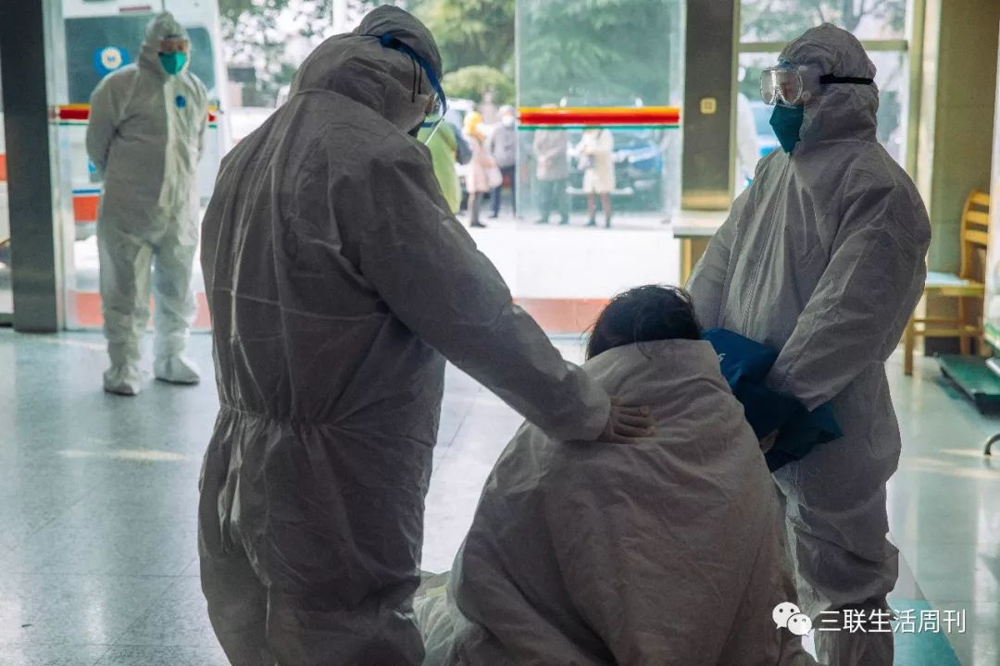
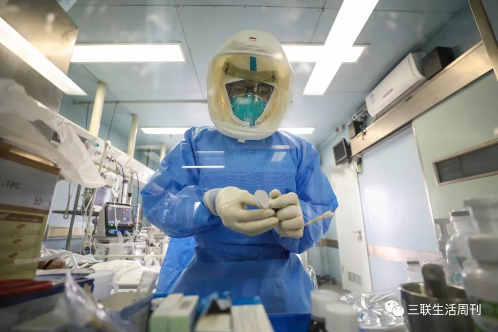
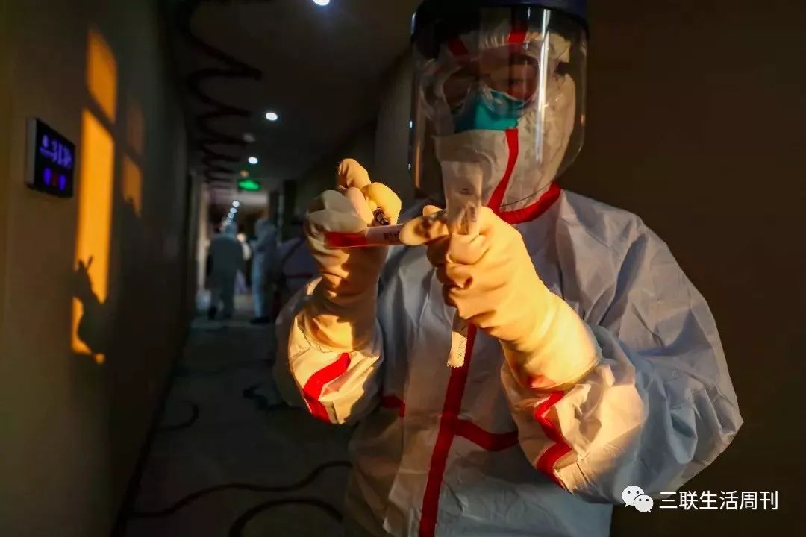

我已经把一半病人送出重症病区
原文链接 备份链接 2月17日，湖北省孝感市孝南区妇幼保健院，医护人员在进行体温测量。中青报·中青网见习记者 鲁冲/摄 本文约3780字 预计阅读时间10分钟 口述：四川大学华西医院重症医学科主任 康 焰 整理：中青报·中青网记者 王 …
新增和现有病例基数连续回落几天后，武汉各大医院终于度过最艰难的时刻。眼下，如何降低重症患者死亡率成为各大重症定点收治医院的首要任务。药物、血浆、ECMO等治疗手段已经纷纷进入临床应用，但面对捉摸不定的新冠病毒，医生们期待着更多“武器”。
记者｜王珊 张从志
“就像低氧状态下的运动”
在整个武汉疫情防控已经进入相对有序的状态下，救治新冠肺炎危重患者、降低病死率的压力更加突出，包裹着每一个参与救援的医务人员。在2月29日的新闻发布会上，国家卫生健康委医政医管局监察专员郭燕红介绍，全国派出精锐医疗力量4.2万人。**这其中至少有1.1万重症专业医务人员负责重症救治工作，接近全国重症医务人员资源的10%。
**

武汉方舱医院医护人员 | 远征 摄
丁仁彧是中国医科大学附属第一医院重症医学科的副主任，2月2日带队来到武汉。他所带领的是一支118人的重症医学科队伍。丁仁彧告诉本刊，这支队伍来自41家医院，包括辽宁9所省直医院、14个地市的32所医院。丁仁彧带队支援的是武汉市人民医院东院区，抵达目的地之后，丁仁彧发现，跟他几乎同时到来的还有四川、重庆、山东、陕西、新疆的至少8支医疗队，全是重症专业的人员，每支队伍均有100多人。他们迅速接管了800张病床。“这个院区的ICU原本只有20张床，我们相当于重建了一个大型的ICU。”
救治的压力是巨大的。在2月19日举行的发布会上，中央指导组医疗救治组专家、北京朝阳医院副院长童朝晖提到，“新冠病毒传染性极强，救治难度比SARS大”。2月24日《柳叶刀呼吸医学》杂志发布了首份关于新冠危重患者特征的研究。研究团队对金银潭最初收治的52名新冠肺炎危重患者进行了追踪，发现危重患者死亡率达到了61.5%，其中26位去世前出现急性呼吸窘迫综合征 (ARDS)。中国疾病控制中心在《中华流行病学杂志》上发表的一项新冠肺炎研究报告，对7万余例患者进行分析后，发现危重症患者死亡率是49%。一位专家分析说，中国疾病控制中心的研究类似一个横断面，并没有追踪危重症患者的预后；前者则是以一家医院为研究对象，而这家医院收治了大量危重症患者，他们对患者进行了随访观察；死亡率的下降也可能是随着国家对武汉投入大量的医疗资源，在临床上取得了成效。

1月底，武汉大学中南医院急救中心接收的新冠肺炎重病号。| 蔡小川 摄
ARDS临床表现为在原发病的基础上出现呼吸窘迫（即呼吸频率显著增快，超过30次/分）、以及用常规氧疗措施（如鼻导管、面罩吸烟等）难以纠正的顽固性低氧血症。北京大学第一医院副院长李海潮是呼吸与危重症医学科大夫，他于2月7日带第三批队员抵达武汉，和第一二批队员一起在同济医院中法新城院区执行重症及危重症患者的医疗救治，他所在的病区有50张床位，目前经手的病人已经有60多位。李海潮告诉本刊，ARDS一直是困扰他们的临床问题。
在李海潮所在的病区，出现ARDS的患者基本在50岁以上，有些年龄60-70岁以上。对于这些患者，即使用上了无创呼吸机，也仍需要努力喘气才能满足或勉强满足自身的供氧需求，快速呼吸的同时，心率也常常会加快。李海潮做了一个比喻，“这个过程就像人一直在运动，他们可能跑得更慢些，但是却一直在跑，而且是在氧饱和度不高不正常的状态下。他们在这个长跑的过程中等待着肺部病变的恢复，这个过程可能需要一个星期或更长的时间。”李海潮说，有些病人在这个长时间“跑步”的过程中心肺的承受力会超过极限，可能出现与“过劳死”类似的情况。“在低氧所造成的持续组织缺氧的状况下，就算原先是器官功能正常的人，也会逐渐出现酸中毒、代谢功能紊乱、进而出现多器官功能衰竭。”在这个过程中，医生能做的是，尽量减少患者的氧耗量，比如鼓励、镇静，以及给予他们营养支持等等，使他们可以“跑”更长的时间。直到“跑”过疾病所造成的损害结束。遗憾的是，有些人可能因为自身的条件所限，比如高龄、基础病等，“跑”不了那么久，而有的人肺脏损伤的很严重，恢复的时间很长，病人也没有能跑那么久。
对医生来讲，患者症状表现出的反复和跳跃，更让他们困扰——即使一直以来医学本身的特点就是迎接不确定性。丁仁彧病区有一个35岁的男性患者，在最初的一个星期内，他的症状都比较稳定，但有一天突然出现高热合并呼吸衰竭，医疗队员紧急将气管插管接呼吸机辅助通气，但是也无法保证氧合，只能给他上了ECMO（体外膜肺氧合，也被称为体外生命支持系统），“他本身并没有严重的基础疾病”。在武汉支援的另一位医生的病区也出现类似的病例。病区里有一个50多岁的患者，住院之后开始时状态一直相对平稳，使用鼻导管吸氧，氧饱和度就能达到90%以上。“然而有一天，他的吸氧浓度不断提高，我们带他拍了一个CT，发现他肺部病变的范围比以前明显扩大，需要进行无创通气了。”对于这些病情迅速变化的患者，目前医生们尚不能解释这其中的机制问题。“现在将患者分为危重型、重型、普通型和轻型四大类，我们观察到的有人始终病情不进展，是普通型，有人会从轻型变成重型，有人会从重型恢复，但这个中间的转变，现在仍然说不清楚。既有的措施都是对症，还需要找到针对新型冠状病毒本身的治疗手段。”在金银潭医院支援的临床医生付勇（化名）告诉本刊。
一部分危重症患者在病程中出现了多器官衰竭的情况，一些专家提出，是新冠病毒感染所诱发的体内炎症因子风暴所引发的后果，比如，很多病人有心肌损伤标志物升高，推测病毒很有可能侵犯并损伤了心肌，还有其他器官和系统。“在我们看到的病例中，危重症患者体内的多种炎性细胞因子或炎症介质的确有显著的升高，但是我们认为他们攻击的靶器官仍然主要是肺脏，对其他器官的影响相对较小，我们所见到的其他器官受损大多数情况下可以主要用缺氧或过负荷来解释。当然，有些人因为合并基础的心脏病、糖尿病等情况，会更容易出现问题。一旦经过合理而有效的治疗，低氧血症逐渐恢复，其他出现的异常经过一定的针对性处理，也会相应地慢慢好起来，因此，合理而有效治疗顽固性低氧血症在我们看来依然是重中之重，低氧的状况解决了，其他方面的问题就会随之逐渐好转。在这个过程中，病毒是否参与了对其他器官的直接损害，损害到什么程度，对疾病预后的影响等，都需要后续的病理和相关机制等进一步研究。”李海潮告诉本刊。

2月6日，武汉市蔡甸区人民医院隔离病房内，一名患者正在接受治疗。| 远征 摄
在离世的病人里，李海潮和他的队友们对一个人印象非常深刻，同时也非常惋惜——在进行无创通气的时候，这个病人的氧饱和度多数时间在80%多，或者更低，经过艰苦的治疗，慢慢地她的氧饱和度已经恢复到稳定在95%以上。这是反复作战得来的结果。李海潮说，这个过程就像是一个人一直在高原上跋涉，长时间地持续憋气会让病人一次次觉得自己到了极限，她始终在坚持着，终于看到了平原，再走一小段就会成功了。“我们都觉得她终于熬过了最艰难的时候。”但有一天不知道原因，患者可能是下意识或无意识地扯掉了呼吸面罩，等到大家发现时她的氧饱和度已经明显下降，心率也是。只有很短的一段时间，病人就离去了，再抢救已经完全来不及了。在此之后，李海潮和同事会更注意关注一些情绪不稳定的患者。比如最亲近的人因为肺炎而离世，或者和家人隔离在不同的地方，自己的病本身又很重，焦虑、忧郁伴随着疾病的折磨，以防他们不经意的举动造成无法逆转的后果。
寻找特效疗法
付勇是在1月中旬抵达金银潭医院支援的。湖北省卫健委发文要求，从1月11日开始，包括同济、协和、省人民、中南医院在内的四家医院分别派出重症医学团队轮流赴武汉金银潭医院值班，每周一轮。按照原计划，一周之后，付勇可以轮换出去，但一直到现在，他也没有从金银潭撤出去。

2月14日，医务人员在金银潭医院隔离病房缓冲区呼叫同事。| 远征 摄
一位金银潭医生方雅（化名）告诉本刊，从去年12月29日金银潭接收第一批患者开始，每天都有大量的患者入院，甚至每个晚上都还要收二三十个病人，每个患者到来后，护士都会给他们测血氧饱和度，只能达到50%-60%——按照《新冠肺炎第六版诊疗方案》，氧饱和度小于等于93%就可以划入重症行列。方雅说，送入医院的患者很多都没有经过系统的评估，医生们根本不知道他们是来的时候情况就很重，还是在救护车上病情发生了变化，“那时大家对新冠肺炎认识还没有现在这么深”。后来，在追问患者和家属病史时，方雅等人才发现，这些患者很多都在外面漂泊了十天半个月，或者即使收入医院也没有得到有效治疗，“有些病人送来抢救一两个小时候就去世了。”
“我们去之前，以为就是去指导和帮忙。”到了之后，付勇就愣住了，不少病房设置不符合传染病病房条件，需要即刻改造，且呼吸机和监护仪都没有几台，许多患者连氧气都吸不上。他即刻上报，请求调配一系列的设备。队伍的构成也是多种多样的，十几个医护来自各个科室。
随着确诊病人基数的回落，降低病死率成为当前的首要任务。截至2月28日24时，武汉现有确诊病例28836例，其中重症病例6585例。一名在武汉支援的重症科医生告诉本刊，从2月初到2月中旬，国家卫健委组织的专家组已经四次到她所支援的武汉某医院进行督查，“他们会看具体的治疗病例，看治疗是否合理，如果不合理，会提出直接而严肃的批评。批评非常严厉，让医务人员脸上都挂不住。”她所在的几家支援的医疗队也成立了院区的专家组，一旦院区出现患者死亡，就要进行严肃讨论，“死亡原因是什么，操作中是不是有什么不当的地方，用了什么样的治疗手段，病人病情加重的原因是什么？是不是存在需要插管没及时？所有的医疗队都在努力救治病人，现在就是一种竞赛比拼，想要把病死率降低，大家都不想自己病区死亡率最高。”

2月13日，金银潭医院隔离病房内忙碌的医护人员。| 远征 摄
在付勇看来，相比一个月前，在救治危重病人上，他发现自己手里的武器仍然不够多。因为没有特效药，抗病毒治疗效果不明确，医护人员正在穷尽几乎所有办法。患者病情发展到重症阶段后，威胁患者生命的主要问题是呼吸衰竭，所以采用呼吸支持是现在治疗的主要手段。但问题是，到底何时使用，该用有创还是无创方式？付勇说，在疫情初期，提倡无创通气的声音更多一些，“无创通气确实有很多优势，比如减少病人的继发感染问题，操作上病人舒适度也高一些。但实施无创通气，人力各方面投入都比较大，当时医疗资源本来就严重不足，无创通气需要经常调整，当时医护人员根本就管不过来。”
随着对新冠肺炎的进一步认识，许多临床医生认为，在判断患者生命体征，比如心率、血压，特别是血氧变化的基础上，要提前进行有创通气以及体外膜肺（ECMO）支持。另一位临床医生却提供了另外一种思路，他认为对需要呼吸支持的病人应该合理选用氧疗手段以及无创通气治疗，对于无创通气治疗无效的患者可以考虑使用气管插管直接通气，有条件的使用ECMO救治，“插管等有创通气手段的使用，会对患者造成进一步损伤，并可能引发新的感染问题。在这样的情况下，是进行有创通气还是无创通气还是要根据患者的状态进行考虑。”
在武汉各大医院，目前有多种药物的临床试验在同时进行，甚至有些试验已经很难找到足够的入组病例。2月15日，在“国务院联防联控机制就药物研发和科研攻关最新进展情况”发布会上，科技部生物中心主任张新民表示，新冠疫情以来，相关科研团队遴选出五千个可能有效的候选药物，在普通冠状病毒感染的细胞水平上进行初筛，之后选定了100个左右的药物在体内开展新型冠状病毒的活性实验。在中国临床试验注册中心已经登记的信息中，包括大剂量痰热清注射液、糖皮质激素、血必净注射液、宫血干细胞、金叶败毒颗粒、托珠单抗、脐血NK细胞联合脐血间充质干细胞、大剂量维生素C、“火神颗粒”等73种药物上了临床。一位临床医生告诉本刊，**包括现在国家推行的血浆疗法，对重型的病人应该有效果，但对危重型的病人效果怎么样，还需要进一步的研究，期望值还不能太高。
**

远征 摄
ECMO成为许多患者最后的希望。作为一名重症医学科的专家，以前付勇也曾利用ECMO救治过许多患者，他提到一位患者，是甲流引发的肺炎，也出现了呼吸衰竭的状况。“当时ECMO持续了几十天，后期恢复很好。但流感病毒跟新冠病毒不一样，流感病毒将患者的肺摧毁了，在抗流感病毒药物的配合使用下，患者肺部恢复很好，能慢慢看到正常的结构，新冠肺炎的危重型患者整个肺部损伤极为严重，到处都是残垣断壁。”肺部没有好转，ECMO撤不下来，又会涉及到继发的感染等问题。”付勇告诉本刊，ECMO本身只是一个对症措施，“它的使用相当于是花钱为患者向上帝买时间，如果没有针对病毒的特效药，买了时间可能也起不到期望的效果。**”
**
作者档案

**王珊
**
喜欢阳光，喜欢晒太阳。
26分钟前


三联生活周刊
个人微博：@小笨走走停
张从志
想吃碗热干面
26分钟前


三联生活周刊
个人微博：@Czz_lifeweek
⊙文章版权归《三联生活周刊》所有，欢迎转发到朋友圈，转载开白请联系后台。未经同意，严禁转载至网站、APP等。
点击下图，下单新冠特刊
「准备复工」

*点击阅读原文，进入周刊书店，**购买**【新冠肺炎专刊组合】*
小笨王珊
长按二维码向我转账
受苹果公司新规定影响，微信 iOS 版的赞赏功能被关闭，可通过二维码转账支持公众号。
原文链接 备份链接 2月17日，湖北省孝感市孝南区妇幼保健院，医护人员在进行体温测量。中青报·中青网见习记者 鲁冲/摄 本文约3780字 预计阅读时间10分钟 口述：四川大学华西医院重症医学科主任 康 焰 整理：中青报·中青网记者 王 …
原文链接 备份链接 “彭主任，急诊室一个31岁的新冠肺炎病人心脏骤停了，您快来看看，要不要转入ICU。” 2月4日晚上7点半，武汉大学中南医院重症医学科（ICU）主任彭志勇刚从湖北天门考察疫情回到办公室，和财新记者聊了不到十分钟，就 …
原文链接 备份链接 “很多人去世。”袁鸣说，“但他们和我们都尽了最大的努力。” 2月15日上午，刚刚经历了一夜冬日雷雨和大风的武汉大雪纷飞，袁鸣早早进入病房查房。依次穿上蓝色隔离服、白色防护服，戴上手术帽、面屏和护目镜，套上手套和脚 …
原文链接 备份链接 继武汉大学中南医院利用 ECMO（叶克膜）成功救治了一名新冠患者之后，上海、甘肃都出现了用 ECMO 挽救危重病患者的案例。 现任台北市长、前台大医院教授柯文哲，作为将 ECMO 技术引入大中华地区的第一人曾 …
原文链接 备份链接 【财新网】（记者 丁捷 综合）大批从事重症医学的医护人员奔赴一线。据国家卫健委，截至2月7日，建立了16个省份支援武汉以外地市的一一对口支援关系，以一省份包一市的方式，全力支持湖北省加强病人的救治工作。驰援武汉的医护 …